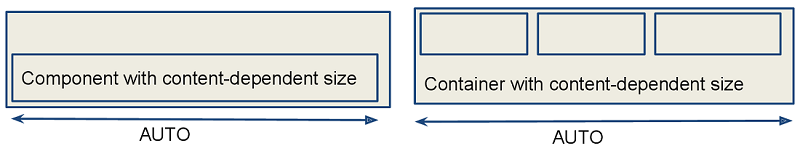
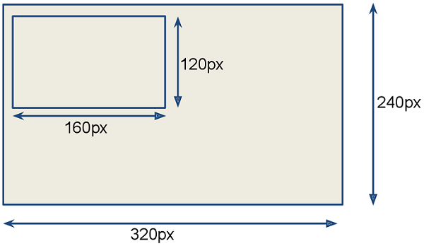
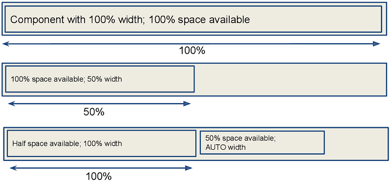
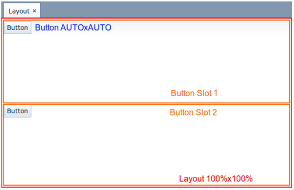
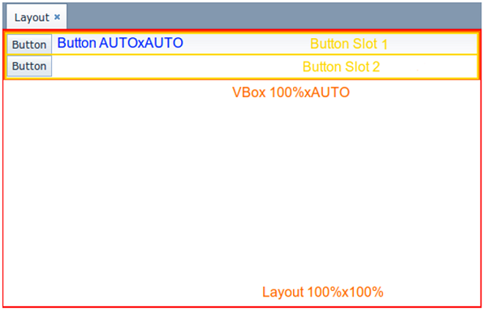
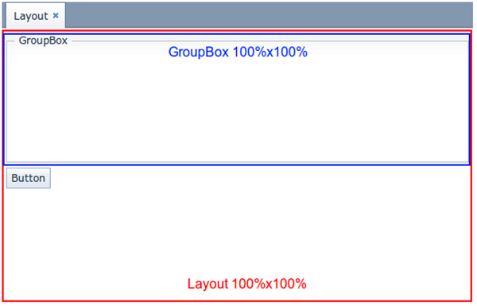
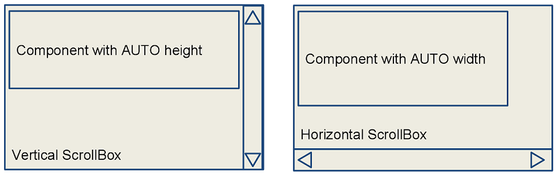
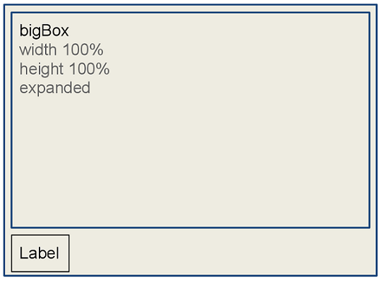
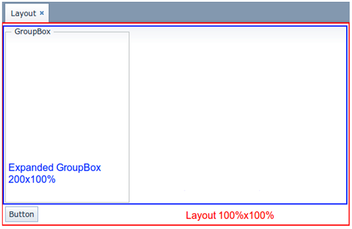
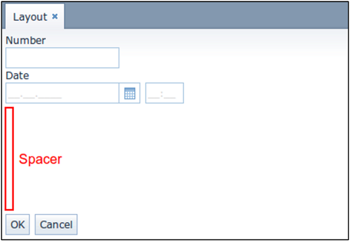

3.5.2.3.1. 组件�置
- 尺寸类�
- 适应内容的尺寸
-
组件将å� 用足够的空间以适应其内容。
例如:
XML<label width=â€�AUTOâ€�/>Javalabel.setWidth(Component.AUTO_SIZE);æ ¹æ�®å†…容调整尺寸的组件将在界é�¢å¸ƒå±€åˆ�始化期间或内容尺寸更改时调整其尺寸。

- 固定大�
-
固定大�表示组件的尺寸在�行时�会改�。
XML<vbox width=�320px� height=�240px�/>Javavbox.setWidth(�320px�);
- 相对大�
-
相对大å°�表示组件将按å�¯ç”¨ç©ºé—´ç™¾åˆ†æ¯”æ�¥å� 用空间。
XML<label width=�100%�/>Javalabel.setWidth(�50%�);使用相对尺寸的组件会�应�用空间大�的�化，在界�上调整其�际大�。

- 容器特性
-
默认情况下，没有 expand å±�性的容器为所有内部嵌套的组件æ��供相ç‰çš„空间。除了：flowBox å’Œ htmlBox。
例如:
<layout> <button caption="Button"/> <button caption="Button"/> </layout>默认情况下，组件和容器的宽度和高度å�–决äº�å…¶ä¸çš„内容。一些容器有ä¸�å�Œçš„默认尺寸：
容器 宽 高 100%
AUTO
100%
AUTO
100%
AUTO
æ ¹ layout å…ƒç´ æ˜¯ä¸€ä¸ªå�‚直布局的容器（
VBox），它的宽度和高度都是 100％。弹窗模å¼�下的高度å�¯ä»¥æ˜¯AUTO。TabSheet ä¸çš„æ ‡ç¾é¡µæ˜¯ VBox 容器。
GroupBox组件包�VBox或HBox，具体�决�其 orientation �性值。自适应大�的容器示例：
<layout> <vbox> <button caption="Button"/> <button caption="Button"/> </vbox> </layout>具有相对尺寸的容器示例：
<layout spacing="true"> <groupBox caption="GroupBox" height="100%"/> <button caption="Button"/> </layout>这里，
layout，以å�Švbox( 或hbox)，为所有内部嵌套组件æ��供相ç‰çš„空间，groupBox的高度为 100％。除æ¤ä¹‹å¤–，groupBox的宽度默认为 100％并å� 用所有å�¯ç”¨ç©ºé—´ã€‚
- 组件特性
-
建议为 Table å’Œ Tree 设置ç»�对高度或相对高度。å�¦åˆ™ï¼Œå¦‚æ�œè¡Œæˆ–èŠ‚ç‚¹å¤ªå¤šï¼Œè¡¨å’Œæ ‘ä¼šæ— é™�大。
ScrollBox 必须具有固定或相对的（而�是 AUTO）宽度和高度。SrcollBox 内的组件，如�放置在滚动方�上，则�能有相对尺寸。
以下示例展示了水平和�直
ScrollBox容器的æ£ç¡®ç”¨æ³•ã€‚如æ�œä¸¤ä¸ªæ–¹å�‘都需è¦�滚动，则必须为组件设置heightå’Œwidth（AUTO 或ç»�对值）。
- 扩展(expand)选项
-
容器的 expand �性用�指定会被赋�最大�用空间的组件。
指定为
expand的组件在组件扩展方å�‘上（对äº�VBox是å�‚ç›´æ–¹å�‘，对äº�HBox是水平方å�‘）会å� 用其容器的所有剩余空间。更改容器大å°�时，这ç§�组件会相应地调整自身大å°�。<vbox expand="bigBox"> <vbox id="bigBox"/> <label value="Label"/> </vbox>expand在对组件的扩展上也å�ªæ˜¯ç›¸å¯¹æœ‰æ•ˆï¼Œä¾‹å¦‚，下é�¢ç¤ºä¾‹ä¸å®½åº¦å›ºå®šçš„ groupBox ä¸�能横å�‘扩展：<layout spacing="true" expand="groupBox"> <groupBox id="groupBox" caption="GroupBox" width="200px"/> <button caption="Button"/> </layout>在下é�¢ç¤ºä¾‹ä¸ï¼Œä½¿ç”¨äº†ä¸€ä¸ªèµ·è¾…助作用的 Label（spacerï¼‰å…ƒç´ ã€‚ç”±äº�将其指定为
expandï¼Œæ‰€ä»¥è¿™ä¸ªç©ºæ ‡ç¾å� 用了容器ä¸å‰©ä½™çš„所有空间。<layout expand="spacer"> <textField caption="Number"/> <dateField caption="Date"/> <label id="spacer"/> <hbox spacing="true"> <button caption="OK"/> <button caption="Cancel"/> </hbox> </layout>